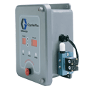
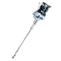

Diaphragm Pumps
Harrington proudly offers a wide selection of premium diaphragm pumps, designed to suit various applications. Our diaphragm pumps come in various configurations based on suction lift, flow rates and temperature. Choose your product today to request a quote, learn more, and explore our purchasing options.

per EA · Sign in for price- CycleFlo II Pneumatic Pump Controller 120Vper EA · Sign in for price
 Graco Husky Series 515 55-Gallon Dispenser Package, Includes: Acetal Pump (241564) PTFE Ball/Diaphragm, Stainless Steel Drum Cover (238283), Heavy-Duty Agitator (238157), Air-Powered Drum Cover Elevator (237746), Air Controls, Hose and Dispense Valveper EA · Sign in for price
Graco Husky Series 515 55-Gallon Dispenser Package, Includes: Acetal Pump (241564) PTFE Ball/Diaphragm, Stainless Steel Drum Cover (238283), Heavy-Duty Agitator (238157), Air-Powered Drum Cover Elevator (237746), Air Controls, Hose and Dispense Valveper EA · Sign in for price- Graco Husky Series 515 55-Gallon Dispenser Package, Includes: Acetal Pump (241564) PTFE Ball/Diaphragm, Stainless Steel Drum Cover (238283), Heavy-Duty Agitator (238157), and Drum Cover Elevatorper EA · Sign in for price
- Graco Husky Series 515 Drum Pump Package, Includes: Polypropylene Pump (241565) PTFE Ball/Diaphragm and Kit (233045) Mounting Base With Polypropylene Siphon Tubeper EA · Sign in for price
- Graco Husky Series 515 Drum Pump Package, Includes: Acetal Pump (241564) PTFE Ball/Diaphragm and Kit (233047) Mounting Base With Stainless Steel Siphon Tubeper EA · Sign in for price
 Air Repair Kit for Husky Series 1590, 1040 and 2150 Air Operated Double Diaphragm Pumpsper EA · Sign in for price
Air Repair Kit for Husky Series 1590, 1040 and 2150 Air Operated Double Diaphragm Pumpsper EA · Sign in for price
Graco Husky Series 515 Twistork™ Package, Includes: Polypropylene Pump (241565) PTFE Ball/Diaphragm Mounted on Twistork™ Agitatorper EA · Sign in for price- Graco Husky Series 515 Twistork™ Package, Includes: Acetal Pump (241564) PTFE Ball/Diaphragm Mounted on Twistork™ Agitatorper EA · Sign in for price
- Graco Husky Series 515 Split Manifold Kit, Includes: (2) Polypropylene Split Inlet Manifolds and (2) Encapsulated O-Ringsper EA · Sign in for price
- Graco Husky Series 515 Split Manifold Kit, Includes: (2) Acetal Split Inlet Manifolds and (2) Encapsulated O-Ringsper EA · Sign in for price
- Graco Husky Series 515 Split Manifold Kit, Includes: (2) PVDF Split Inlet Manifolds and (2) Encapsulated O-Ringsper EA · Sign in for price
- Graco Husky Series 515 Split Manifold Kit, Includes: (2) Acetal Split Outlet Manifolds and (2) Encapsulated O-Ringsper EA · Sign in for price
- Graco Husky Series 515 Split Manifold Kit, Includes: (2) PVDF Split Outlet Manifolds and (2) Encapsulated O-Ringsper EA · Sign in for price
 Graco Diaph Kit for Husky Series 1050 647040 Air Operated Double Diaphragm Pump, Geolast® Diaphragmper EA · Sign in for price
Graco Diaph Kit for Husky Series 1050 647040 Air Operated Double Diaphragm Pump, Geolast® Diaphragmper EA · Sign in for price- Graco Diaph Kit for Husky Series 1050 647666 Air Operated Double Diaphragm Pump, Thermoplastic Polyester Elastomer Diaphragmper EA · Sign in for price
- Graco Diaph Kit for Husky Series 1050 649006, 649034, 649218, 649211, 649392, 649398, 647075, 647028, 647004, 647018, 651009 and 651440 Air Operated Double Diaphragm Pumps, Two Piece PTFE/EPDM Diaphragmper EA · Sign in for price
- Graco Diaph Kit for Husky Series 1050/1050HP 649001, 647035, 24W756 and 24W757 Air Operated Double Diaphragm Pumps, Santoprene™ Diaphragmper EA · Sign in for price
- Graco Seat Kit for Husky Series 1050 649218 and 647075 Air Operated Double Diaphragm Pumps, Acetal Seatper EA · Sign in for price
- Graco Seat Kit for Husky Series 1050/1050HP 647040 and 24W764 Air Operated Double Diaphragm Pumps, Geolast® Seatper EA · Sign in for price
- Graco Seat Kit for Husky Series 1050 647666 Air Operated Double Diaphragm Pump, Thermoplastic Polyester Elastomer Seatper EA · Sign in for price
- Graco Seat Kit for Husky Series 1050 647004, 649001, 649006 and 649034 Air Operated Double Diaphragm Pumps, Polypropylene Seatper EA · Sign in for price
- Graco Seat Kit for Husky Series 1050 647035 Air Operated Double Diaphragm Pump, Santoprene™ Seatper EA · Sign in for price
- Graco Seat Kit for Husky Series 1050/1050HP 649211, 649392, 647028, 647018, 651009, 24W756, 24W757 and 24X389 Air Operated Double Diaphragm Pumps, 316 Stainless Steel Seatper EA · Sign in for price
- Graco Seat Kit for Husky Series 1050 651440 Air Operated Double Diaphragm Pump, FKM Seatper EA · Sign in for price
- Graco Ball Kit for Husky Series 1050 647075, 647028, 647004, 651009, 651440, 649006, 649034, 649218, 649211, 649392 and 649398 Air Operated Double Diaphragm Pumps, PTFE Ballper EA · Sign in for price
- Graco Ball Kit for Husky Series 1050/1050HP 647035, 24W756, 24W757 and 649001 Air Operated Double Diaphragm Pumps, Santoprene™ Ballper EA · Sign in for price
- Graco Air Valve Kit for Husky Series 1050 647666, 647075, 647040, 647035, 647028, 647004, 647018, 651009 and 651440 Air Operated Double Diaphragm Pumpsper EA · Sign in for price
- Graco Air Valve Kit for Husky Series 1050 649001, 649006, 649034, 649392 and 649398 Air Operated Double Diaphragm Pumpsper EA · Sign in for price
- Graco Air Valve Kit for Husky Series 1050 649218 and 649211 Air Operated Double Diaphragm Pumpsper EA · Sign in for price
- Graco Seat Kit for Husky Series 1050 649398 Air Operated Double Diaphragm Pump, PVDF Seatper EA · Sign in for price
 Graco Air Valve Kit for Husky Series 3300 652002, 652046, 652021, 652081 and 652036 Air Operated Double Diaphragm Pumpsper EA · Sign in for price
Graco Air Valve Kit for Husky Series 3300 652002, 652046, 652021, 652081 and 652036 Air Operated Double Diaphragm Pumpsper EA · Sign in for price- Graco Air Valve Kit for Husky Series 3300 652404, 652400, 652423, 652414, 652804 and 652812 Air Operated Double Diaphragm Pumpsper EA · Sign in for price
- Graco Diaphragm Kit for Husky Series 3300 652400, 652423, 652036 and 652812 Air Operated Double Diaphragm Pumps, Santoprene™ Diaphragmper EA · Sign in for price
- Graco Diaphragm Kit for Husky Series 3300 652404, 652414, 652021, 652081 and 652804 Air Operated Double Diaphragm Pumps, Two Piece PTFE Diaphragmper EA · Sign in for price
- Graco Seat Kit for Husky Series 3300 652081 Air Operated Double Diaphragm Pump, Acetal Seatper EA · Sign in for price
- Graco Seat Kit for Husky Series 3300 652046 Air Operated Double Diaphragm Pump, Geolast® Seatper EA · Sign in for price
- Graco Seat Kit for Husky Series 3300 652002 Air Operated Double Diaphragm Pump, TPE Seatper EA · Sign in for price
- Graco Seat Kit for Husky Series 3300 652404 and 652400 Air Operated Double Diaphragm Pumps, Polypropylene Seatper EA · Sign in for price
- Graco Seat Kit for Husky Series 3300 652423, 652036 and 652812 Air Operated Double Diaphragm Pumps, Santoprene™ Seatper EA · Sign in for price